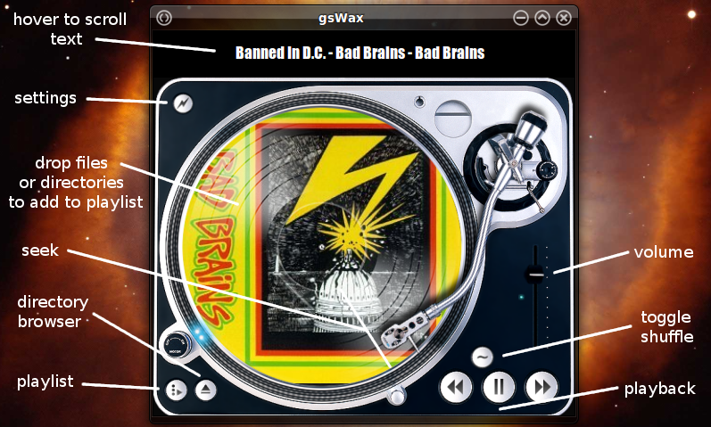

Ruby the Red Gem of Programming
This is an archived post This is an archived post
Previous
Index
Next
gsWax 0.01 was released!
January 24 2012, 3:43 AM
by ashbb

http://www.ruby-forum.com/topic/3498487
Awesome, J. Thank you! So cool!!
ashbb
598 views and 0 responses